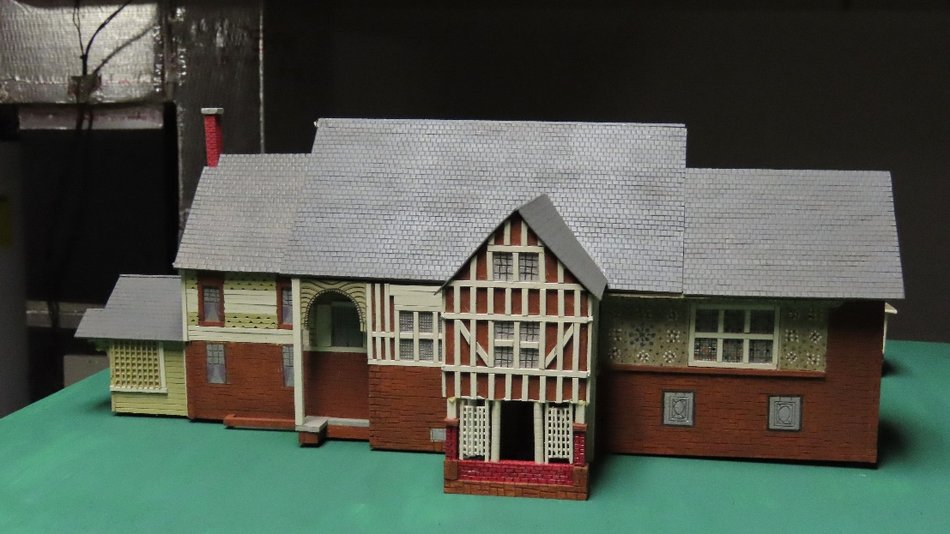
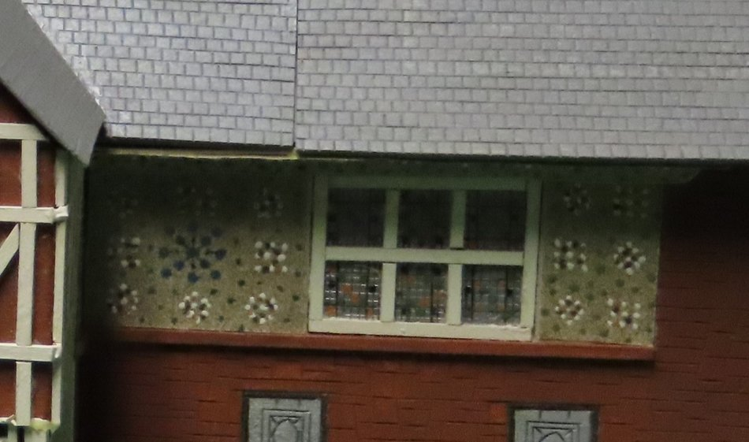
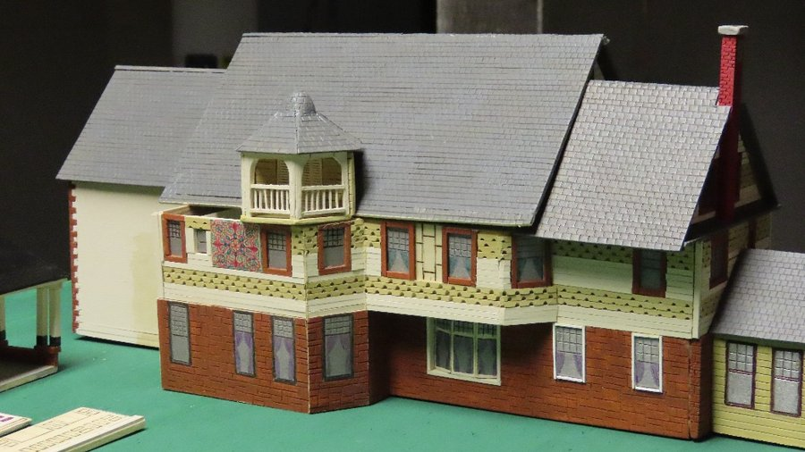
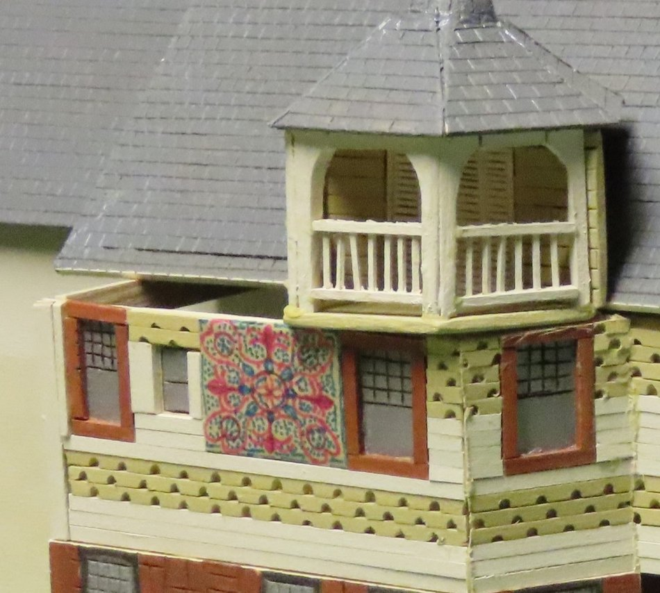
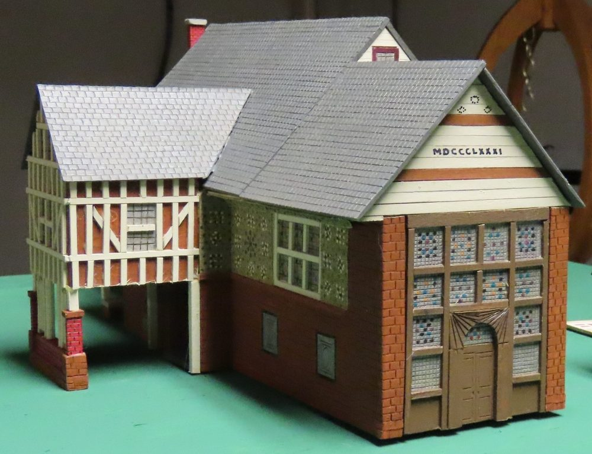
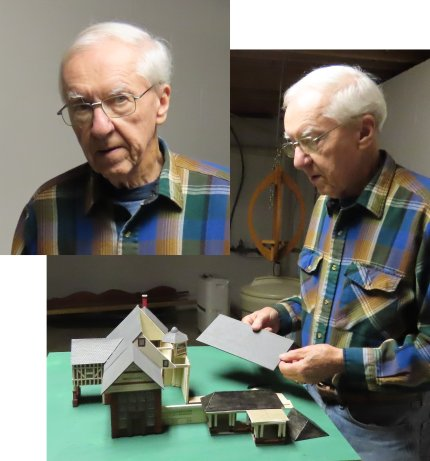
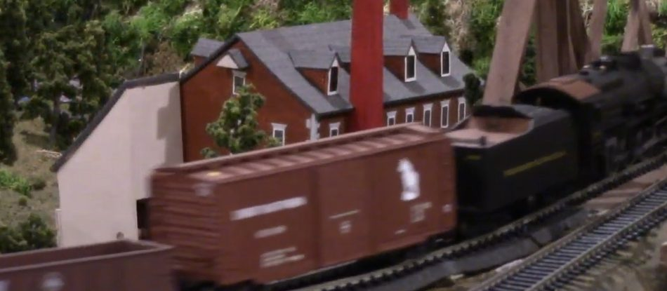
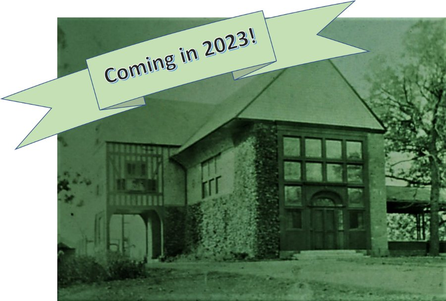

Progress is a daily constant for Harvey Turner's "Millwood" restoration project in Cornwall Borough. Much of the exterior work has been finished and buttoned up for the cold season now upon us in Lebanon County.
With the public interest and excitement being created by this ongoing work, Turner wishes everyone to be patient, as the hazards of the construction site are too great to allow any public access for the time being.

However, in the meantime one local resident has been busy constructing for everyone's enjoyment an HO-scale model of Millwood, which is expected to be displayed inside Millwood at a future date. Model-builder Dick Williams has provided these pictures that for now may be an enticement to stay tuned for further developments.
Williams has captured brilliantly some of the fine details of Stanford White's artistic embellishments, such as the second story display to the right of the entrance. This unique, arched stucco panel is adorned with embedded glass bottles.



Another unique stucco art panel appears on the back of the mansion. Above it, the cupola porch on the third floor attaches to the butler's quarters, where he was provided a view of approaching carriages coming up the hill. The driveway wraps around the mansion to afford visitors a view of all aspects of the mansion's grand design.
The most remarkable feature of the mansion exterior is the bank of 10 stained-glass windows that adorn the 2½ story grand ballroom.

A resident of Cornwall Manor, Williams is known by many for his wonderful models of historic Cornwall that are part of the Cornwall Manor Railroad Club's display. He has built models of the Cornwall Iron Furnace and its out-buildings, the historic buildings of Cornwall Manor, the Ore crusher of the Cornwall Ore Bank, features of Mt. Gretna, and most recently Lebanon.

By pleasant coincidence, the railroad layout and all of its models are on public display this coming Saturday, Dec. 3, as the Cornwall Iron Furnace and Cornwall Manor hold a joint open house "Christmas at Cornwall." The railroad display will only be open from 10 a.m. to 1 p.m.

The railroad layout was featured in a 2020 "Christmas at Cornwall" video when the COVID pandemic had shut down public access to virtually everything. Now that the opportunity presents itself, you'll want to come enjoy this display in-person!
Stay tuned for more Millwood details. Based on the views shown above, 2023 promises to be an exciting year.

Originally published on LebTown, November 30, 2022.